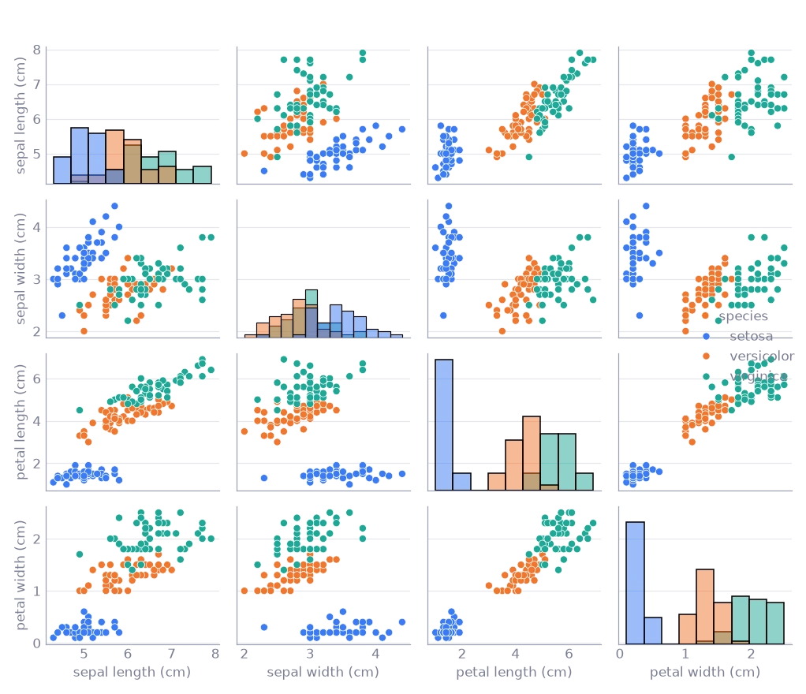
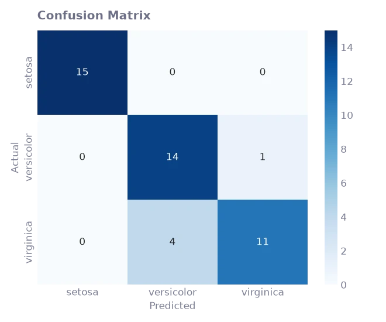

Classify iris flowers, from raw data to a confusion matrix¶
Classic scikit-learn tutorial, rewritten as a Strata notebook. Shows what the graph looks like for a realistic ML pipeline: load → explore → split → train → evaluate → visualize.
Load iris dataset¶
# @name Load iris dataset
# Load the Iris dataset into a pandas DataFrame.
import pandas as pd
from sklearn.datasets import load_iris
iris_bunch = load_iris()
df = pd.DataFrame(iris_bunch.data, columns=iris_bunch.feature_names)
df["species"] = pd.Categorical.from_codes(iris_bunch.target, iris_bunch.target_names)
feature_names = iris_bunch.feature_names
print(f"Loaded {len(df)} samples, {len(feature_names)} features")
print(f"Species: {df['species'].unique().tolist()}")
df.head()
Output
| sepal length (cm) | sepal width (cm) | petal length (cm) | petal width (cm) | species |
|---|---|---|---|---|
| 5.1 | 3.5 | 1.4 | 0.2 | setosa |
| 4.9 | 3 | 1.4 | 0.2 | setosa |
| 4.7 | 3.2 | 1.3 | 0.2 | setosa |
| 4.6 | 3.1 | 1.5 | 0.2 | setosa |
| 5 | 3.6 | 1.4 | 0.2 | setosa |
Explore per-feature stats¶
# @name Explore per-feature stats
# Summary statistics grouped by species.
stats = df.groupby("species").agg(["mean", "std"]).round(2)
print(stats)
sepal length (cm) ... petal width (cm)
mean std ... mean std
species ...
setosa 5.01 0.35 ... 0.25 0.11
versicolor 5.94 0.52 ... 1.33 0.20
virginica 6.59 0.64 ... 2.03 0.27
[3 rows x 8 columns]
Pairwise scatter plot¶
# @name Pairwise scatter plot
# Pairwise scatter plot colored by species.
import matplotlib
import seaborn as sns
matplotlib.use("Agg")
import matplotlib.pyplot as plt
plt.style.use("strata")
g = sns.pairplot(df, hue="species", diag_kind="hist", height=2)
g.figure.suptitle("Iris Feature Distributions", y=1.02)
plt.tight_layout()
g.figure

Train and evaluate¶
The exploration cells above don't feed the model directly, they're sanity checks. The cells below are the ML pipeline proper: split the data, fit a random forest, score it against the held-out test set, and visualize the confusion matrix.
Edit any cell in this section and the downstream cells go stale. Re-running the test set cell after an upstream change cascades the whole subtree in topological order, hitting cache for everything that hasn't changed.
Train / test split¶
# @name Train / test split
# Split into training and test sets.
from sklearn.model_selection import train_test_split
X = df[feature_names]
y = df["species"]
X_train, X_test, y_train, y_test = train_test_split(
X, y, test_size=0.3, random_state=42, stratify=y
)
print(f"Train: {len(X_train)} samples")
print(f"Test: {len(X_test)} samples")
Train random forest classifier¶
# @name Train random forest classifier
# Train a Random Forest classifier.
from sklearn.ensemble import RandomForestClassifier
model = RandomForestClassifier(n_estimators=100, random_state=42)
model.fit(X_train, y_train)
train_score = model.score(X_train, y_train)
test_score = model.score(X_test, y_test)
print(f"Train accuracy: {train_score:.3f}")
print(f"Test accuracy: {test_score:.3f}")
Evaluate¶
# @name Evaluate
# Per-class precision, recall, and f1 against the test set.
from sklearn.metrics import classification_report
y_pred = model.predict(X_test)
report = classification_report(y_test, y_pred)
print(report)
precision recall f1-score support
setosa 1.00 1.00 1.00 15
versicolor 0.78 0.93 0.85 15
virginica 0.92 0.73 0.81 15
accuracy 0.89 45
macro avg 0.90 0.89 0.89 45
weighted avg 0.90 0.89 0.89 45
Confusion matrix¶
# @name Confusion matrix
# Confusion matrix heatmap.
import matplotlib
import seaborn as sns
from sklearn.metrics import confusion_matrix
matplotlib.use("Agg")
import matplotlib.pyplot as plt
plt.style.use("strata")
cm = confusion_matrix(y_test, y_pred, labels=model.classes_)
fig, ax = plt.subplots(figsize=(6, 5))
sns.heatmap(
cm,
annot=True,
fmt="d",
cmap="Blues",
xticklabels=model.classes_,
yticklabels=model.classes_,
ax=ax,
)
ax.set_xlabel("Predicted")
ax.set_ylabel("Actual")
ax.set_title("Confusion Matrix")
plt.tight_layout()
fig

About this example¶
What it shows¶
- DAG branching.
scatter_plotandtrain_testboth read fromload_data, so editingload_datainvalidates both branches. - Mixed output types. Cells produce DataFrames (arrow/ipc), trained models (pickle), and matplotlib figures (image/png), all stored natively by Strata's serializer.
- Display outputs.
_at the end of a cell (or a trailing expression) becomes an inline preview on the cell.
Cells¶
| Cell | What it does |
|---|---|
load_data |
Loads the iris dataset into a DataFrame. |
explore_stats |
Per-feature summary stats. |
scatter_plot |
Pair-plot of the four features, colored by class. |
train_test |
70/30 train/test split. |
train_model |
Fits a RandomForestClassifier (100 trees). |
evaluate |
Accuracy + per-class precision/recall. |
confusion |
Confusion-matrix heatmap. |
Running¶
From the project root:
Then open Iris Classification from the notebook list on the Strata home page.
Try this¶
- Change the
test_sizeintrain_test. Cells downstream go stale;scatter_plotstays ready (it doesn't depend on the split). - Re-run
evaluatewithout re-training: the trained model is cached, so only evaluation runs.